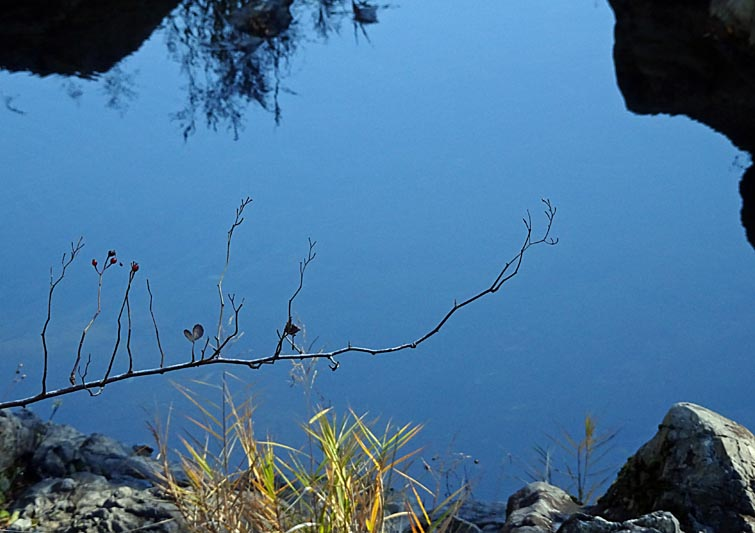

ロースソーン: コンチェルタンテ（ピアノとヴァイオリンのための）
ウォルトンと同世代(3歳下)、同じランカシャー出身の作曲家アラン・ロースソーンは、甘さ極少の、モダニズムで武装した作曲家という印象がある。ただ、身構えて聴くことにはなっても、複雑に屈折していて何が言いたいのか分からないという晦渋さはあまりなくて、とっつきにくさの質が、例えば後期のブリッジなどとは異なるように思う。最初に聴いたのは『ピアノ協奏曲第1番』だった。バルトークの『ピアノ協奏曲第2番』、あるいはプロコフィエフに似て、ハリネズミのように尖った曲だと思ったが、それはつまり当時の進歩主義の時代を忠実に写し取った作品ということであり、現代においては一種ノスタルジーをまとって聴こえてくる面もあり、それもまた魅力である。
このアルバムはロースソーンのピアノ入り室内楽曲を集めたもので、『コンチェルタンテ』は1930年代、比較的初期の作品に属する。他の曲と比べてもコンパクトで重要作品とはいえないかもしれないが、流れがとても立体的であり、くどくもなくて味わい深いと思う。一緒に入っているのは最晩年1968年までのさまざまな時期に作曲された計5曲。その中では『ヴィオラソナタ』も気に入ったが、これも『コンチェルタンテ』と同時期(1937年)の作品とのこと。
Alan Rawsthorne : Concertante
Nadia Myerscough (vn)
Yoshiko Endo (pf)
(1997)
このアルバムのジャケットにはロースソーンの二人目の妻で画家だったイザベルの作品が使われている。イザベルはエプスタイン、ジャコメッティ、ベーコンらと親しく、彼らの作品のモデルとしても名を残している。
ロースソーンはピアノを短期間だがエゴン・ペトリに学んでおり、ピアノに関してはブゾーニの孫弟子ということになる。その成果か、ピアノパートはどれも非常にかっちりと書かれているように聴こえる（例えば『ヴィオラソナタ』の第1楽章）。ちなみにエゴン・ペトリはなぜか日本ではほとんど評価されていないようだが、古い録音がたくさん残されているので、それらをぼちぼち聴いている（なお、バッハの『羊は安らかに草を食み』の編曲はよく知られている）。

(Dec. 2, 2023)